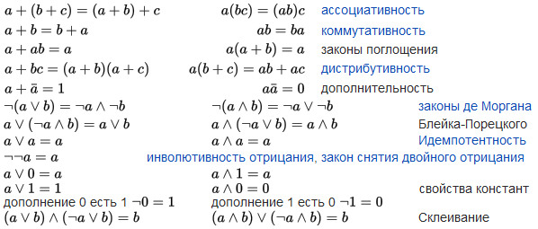
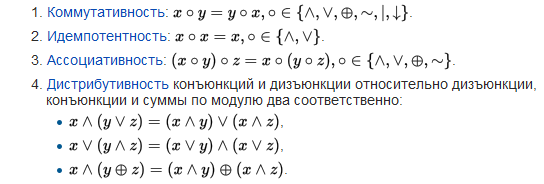
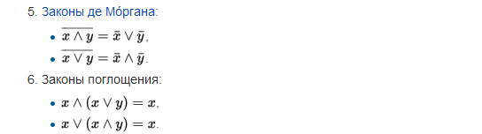
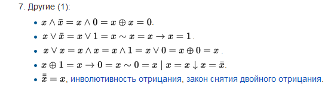

Также вводятся дополнительные операции, такие как
эквиваленция <-> {leftrightarrow} («тогда и только тогда, когда»),
импликация -> {rightarrow} («следовательно»),
сложение по модулю два {oplus / + внутри О} («исключающее или»),
штрих Шеффера | {mid / вертикальная черта} (эквивалент "И-НЕ"),
стрелка Пирса v {downarrow} (эквивалент "ИЛИ-НЕ")
и другие.
операция ¬ {neg} приобретает смысл вычитания из единицы (отрицания);
? {lor} — немодульного сложения;
& — умножения;
<-> {leftrightarrow} — равенства;
? {oplus} — в буквальном смысле сложения по модулю 2 (исключающее Или — XOR);
| {mid} — непревосходства суммы над 1 (то есть A ? B = (A + B) <= 1).



Штрих Шеффера ( | - "И-НЕ");
Стрелка Пирса (down_arrow - "ИЛИ-НЕ");
Импликация ( => или <= ) - связь по принципу "если... то..." или "посылка"=>"следствие". Острие всегда указывает на следствие. Посылка является условием, достаточным для выполнения следствия. Следствие является условием, необходимым для истинности посылки.
Пример реализации Импликации:
if ( выражение_для_проверки_A ) {
if ( выражение_для_проверки_B ) {
сделать_что-то_полезное;
}
else {
сбой;
};
}
else {
сделать_что-то_на_случай_ложности_A;
};
будет успешно выполняться тогда и только тогда, когда верна импликация A>B.
В то же время эти условия можно спокойно написать в одной строке, объединив их оператором && (AND).